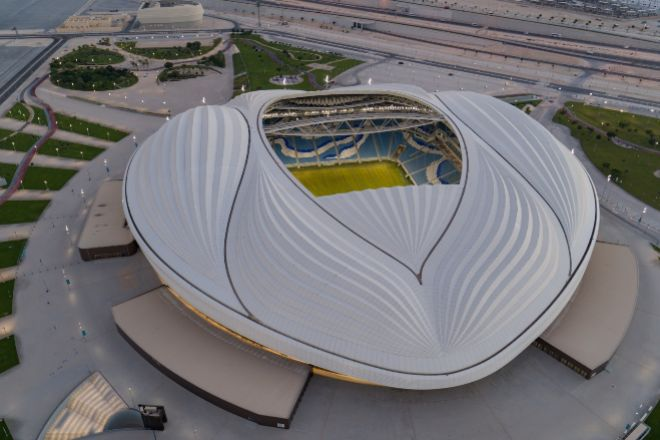
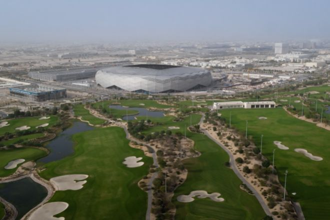
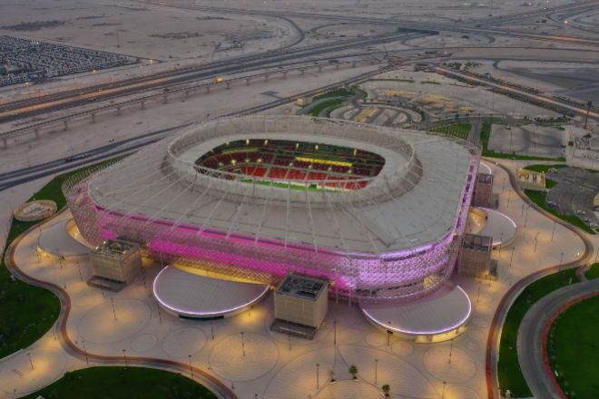
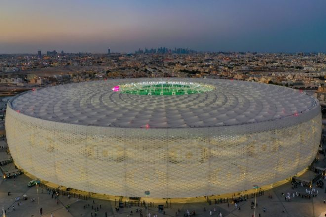
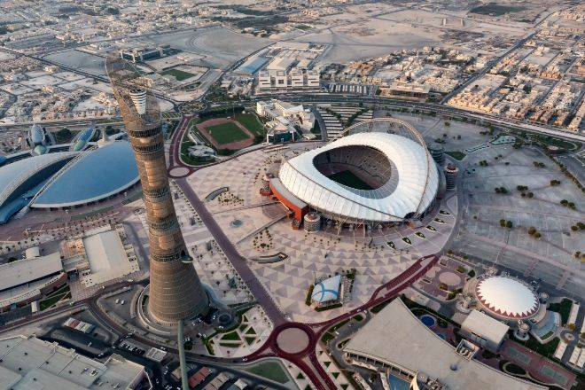
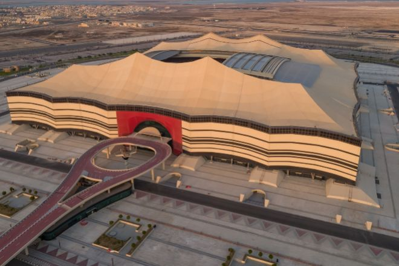
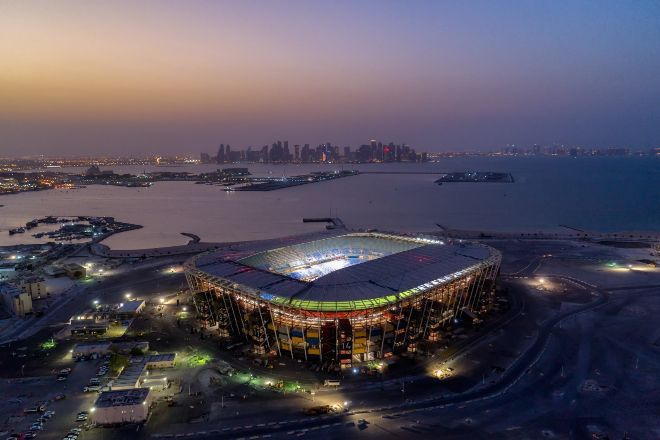

Estadio Al Janoub
Situado en Al Wakrah, fue el primero en construirse íntegramente para Qatar 2022. Proyectado por el estudio de arquitectura de Zaha Hadid, en colaboración con AECOM, su diseño está inspirado en el mar y recrea la forma del 'dhow', el barco tradicional de la región.
Dispone de un techo operable y un innovador sistema de refrigeración alimentado por energía solar. Tiene capacidad para 40.000 asientos, de los cuales 20.000 son desmontables, pensados para transportar a otro país que necesite tal infraestructura o como legado del torneo.

Estadio de la Ciudad de la Educación
Diseñado por el estudio de arquitectura español Fenwick Iribarren, está situado en la Ciudad de la Educación, sede de la Fundación Qatar. La fachada está adornada por triángulos formando complejos patrones geométricos en forma de diamante que parecen cambiar de color cuando incide el sol.
Conocido también como el "Diamante del Desierto", fue la primera sede del Mundial calificada con cinco estrellas por su diseño y construcción por parte del Sistema Global de Evaluación de la Sostenibilidad. Está concebido como punto de encuentro social del Campus, cuenta con áreas de reunión y zonas verdes. Su capacidad es de 40.000 espectadores, que después del mundial se reducirá a 20.000.

Estadio Ahmad Bin Ali
Ubicado en la ciudad de Al Rayyan, el estadio se construyó en el emplazamiento del antiguo recinto también llamado Estadio Ahmad Bin Ali y muchos de los materiales se reutilizaron en el nuevo proyecto. Diseñado por el estudio de ingeniería y arquitectura Ramboll, destaca por su fachada brillante, compuesta por motivos característicos del país: la importancia de la familia, la belleza del desierto, la flora y la fauna autóctonas y el comercio local e internacional.

Estadio Al Thumama
Inspirado en la "gahfiya", un gorro tejido tradicional que llevan los hombres y niños de Oriente Medio y que simboliza dignidad e independencia, es obra del arquitecto qatarí Ibrahim M. Jaidah en colaboración con el estudio Fenwick Iribarren.
En 2018, el diseño del recinto ganó el premio MIPIM/The Architectural Review Future Project Award. El Estadio Al Thumama aspira a ser una referencia en edificios deportivos para la ciudad de Qatar. Después del Mundial, acogerá un pabellón multideportivo, un centro acuático, un hotel boutique y una mezquita. Dos equipos locales de fútbol harán uso de las instalaciones.

Estadio Internacional Khalifa
Cuenta con una larga trayectoria como sede de grandes eventos deportivos desde 1976. Como estadio nacional de Qatar, pasó por una amplia remodelación para el Mundial de fútbol. Se añadió una grada y una nueva fachada, así como un innovador sistema de iluminación LED.

Estadio Al Bayt
Este espectacular estadio se inspira en las "bayt al sha'ar", tiendas de campaña utilizadas históricamente por los pueblos nómadas de Qatar y la región del Golfo. Ubicado en Al Khor, es obra de la firma Dar Al-Handasah. Su objetivo es honrar el pasado y presente de Qatar con una mirada hacia el futuro.
Con una capacidad para 60.000 personas, en él se disputará el partido inaugural del Mundial, además de otros ocho encuentros de la competición.

Estadio 974
El Estadio 974 es un innovador estadio construido con contenedores de transporte modificados y elementos modulares de acero. Un dato curioso es que es el primero totalmente desmontable en la historia de la Copa Mundial de la FIFA. De este modo, resulta más sostenible y puede transportarse a otras ciudades para darle diversos usos.
Para su diseño, el estudio de arquitectos Fenwick Iribarren se inspiró en el carácter y la historia de Doha como gran ciudad portuaria del Golfo Pérsico. Recibe su nombre de los 974 contenedores usados para su construcción, que a su vez es el código de marcación internacional de Qatar.

Estadio Lusail
Es la joya de la corona. Es la sede de torneos más grande de Qatar y está situado en la ciudad de la que toma su nombre. El estudio Foster+ Partners firma el diseño de esta maravilla inspirada en las luces y sombras de la linterna "fanar". Su forma y fachada emulan los intrincados motivos decorativos de los cuencos y otros recipientes característicos de la edad de oro del arte y la artesanía en el mundo árabe e islámico.
También sobresale por su sostenibilidad, concebido para ser eficiente energéticamente y capaz de funcionar en condiciones climáticas extremas durante el verano. Rodeado por un estanque de agua reflectante, los espectadores cruzarán un foso para entrar al edificio a través de seis puentes.